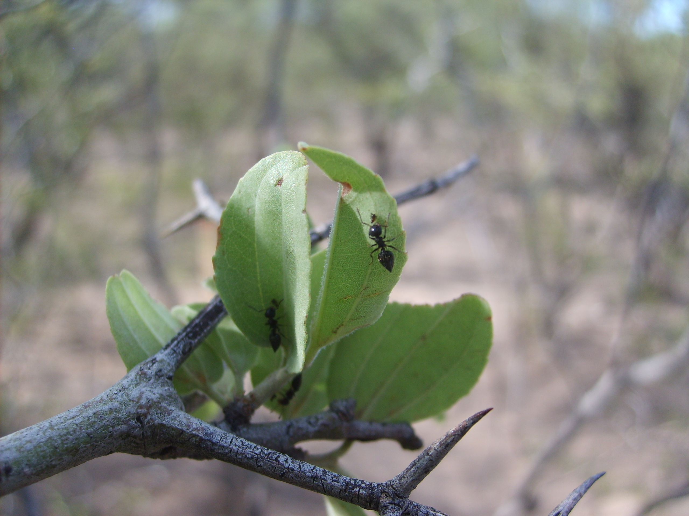

Research
Study of forest degradation, herbivory and regeneration across South American ecosystems.
Explore research →
Multimedia
Interactive ecological simulations, visualizations and field photography.
Explore media →
Latest Research

Seed rain and seed bank dynamics
Understanding regeneration processes in degraded forest systems.

Herbivory across land-use gradients
Patterns of vertebrate and invertebrate herbivory across forest degradation levels.
Latest Writing
Understanding island biogeography through simulation
Using interactive models to explore ecological theory.

Why seed banks matter in forest regeneration
Reflections on seed persistence and forest recovery.
About
I am a plant ecologist studying how land-use change affects forest structure and regeneration in South American forests.
My work combines field ecology, statistical modelling and ecological simulations.
Read more →